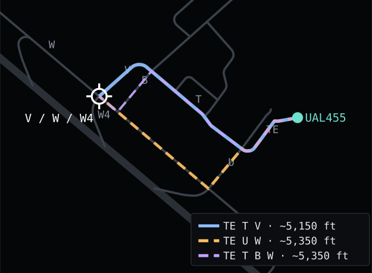
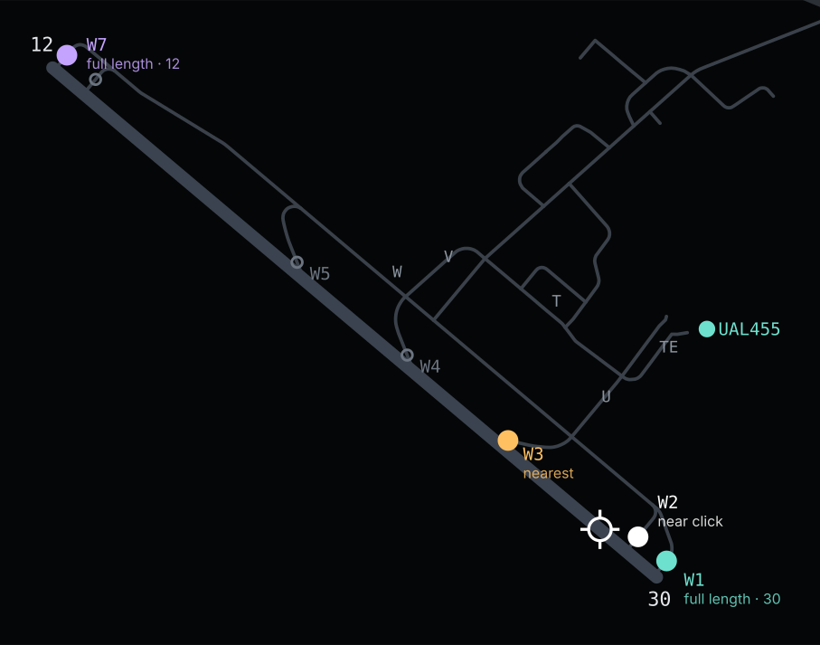

The owner's rule for YAAT-569 is that a quick command never opens a nested context submenu. Two places still build one, both in the ground point menu (the right-click on a taxi node, a runway or a stand with an aircraft selected): Taxi here with several routes (MenuCatalog.BuildPointTaxiHere) and Taxi to {end} (BuildTaxiToRunwayEnds), up to four menus deep. Push to is a single command with no choice. This page draws each open decision as lanes A, B (and C); no lane is marked recommended.
Every flyout draws the landed parts as built: the Fluent dark menu, the tab strip of FlyoutTabStrip, the title lines and two-line rows (MenuTwoLineRow) of Taxi to runway, the glyph rows of MenuGlyphRow, the 480 px cap. The aircraft is UAL455, A320, at KOAK gate 25; taxiway, runway, spot and node names are from the bundled layout (tests/Yaat.Sim.Tests/TestData/oak.geojson). Click a row, a tab or a strip button to see what it does.
SetRoutePreview (dashed); a title line or a tab draws nothing and leaves the last preview; choosing another tab clears it, and closing the flyout clears it. Today's point submenus never clear it on pointer leave (MenuCatalog.BuildChoiceSubmenu).GetCustomTaxiSeed), lane A below. A box inside the Taxi here flyout (lane B) has nowhere to live at a node with no route, where Custom taxi is needed most. Drawn as two small lanes.
